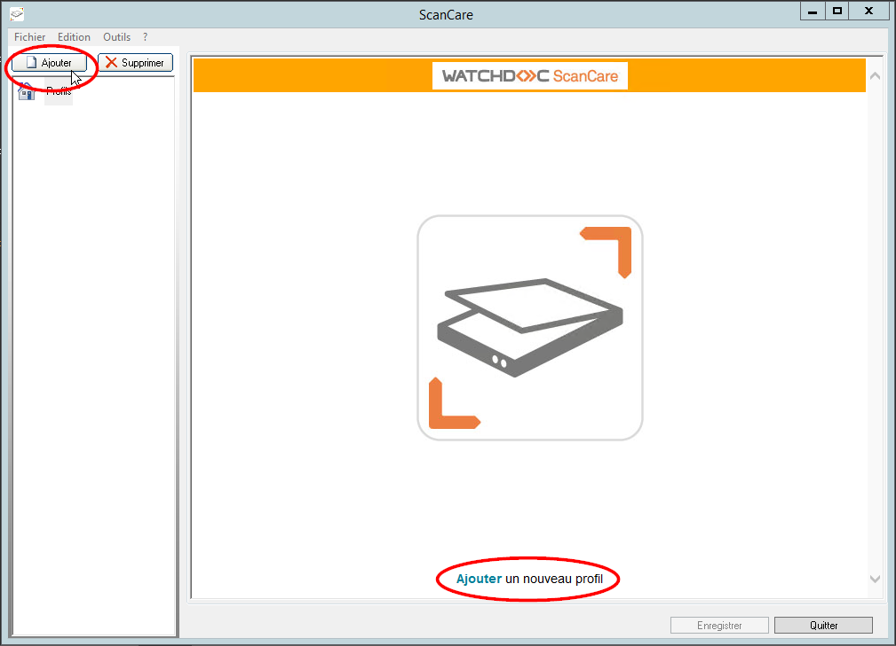
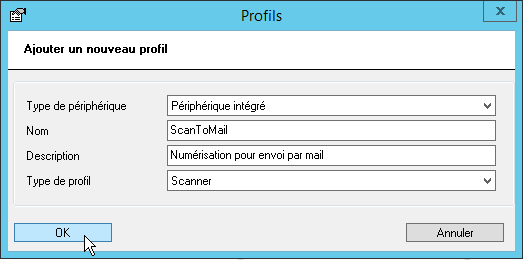
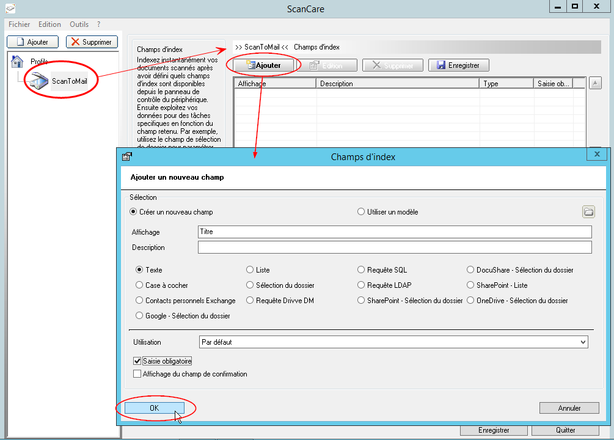
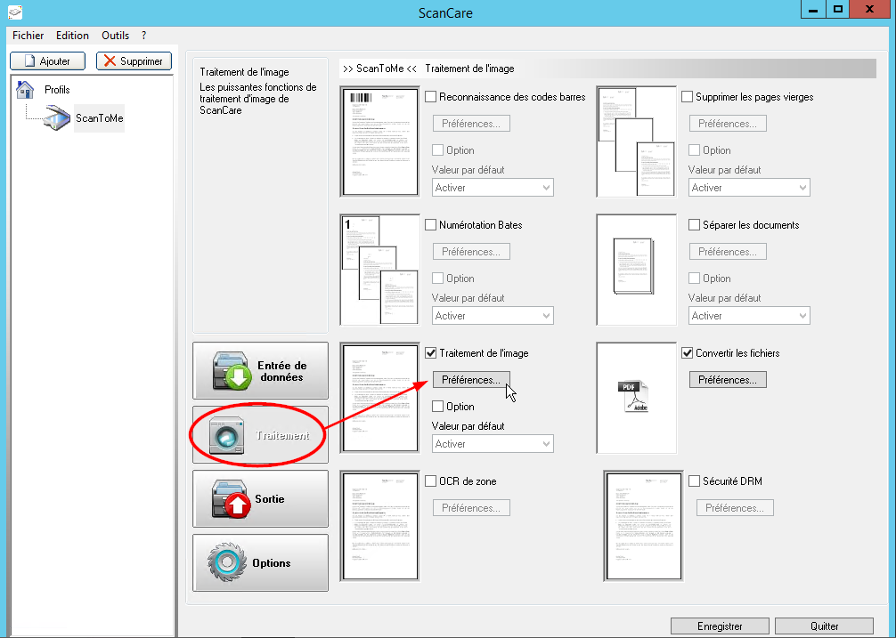
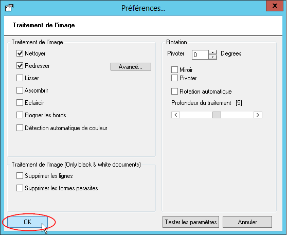
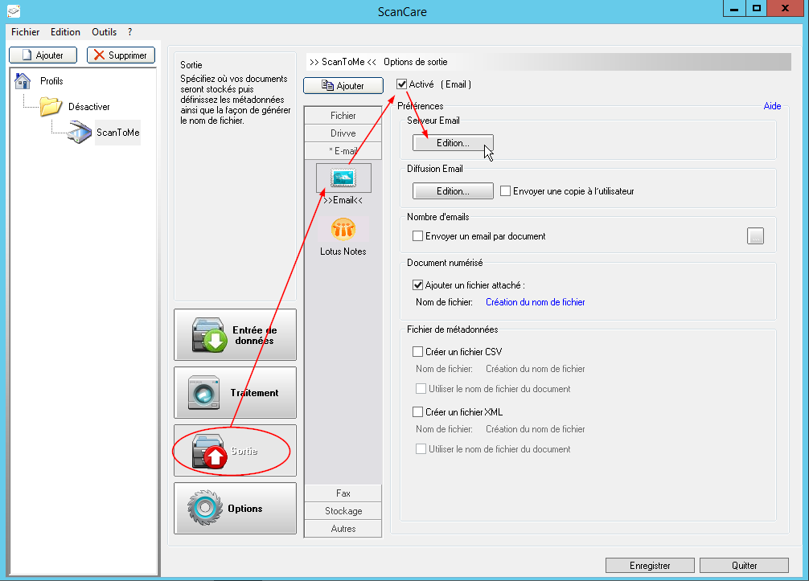
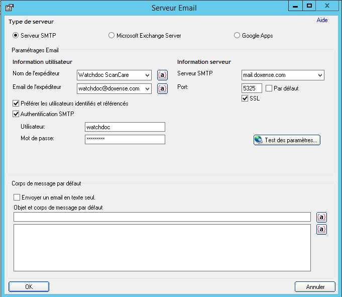
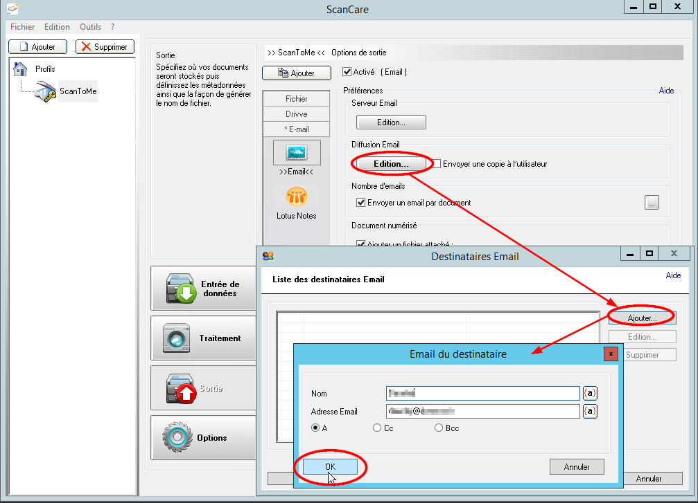
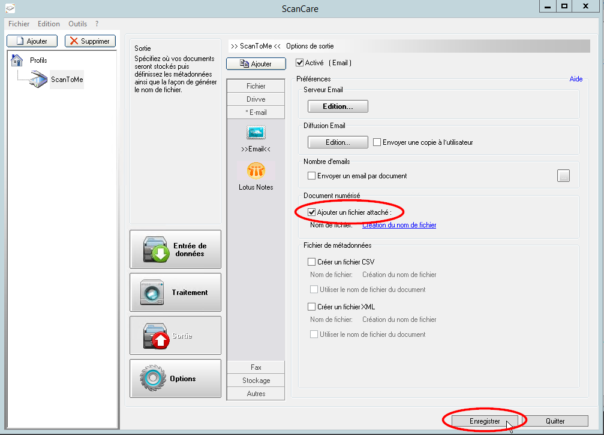
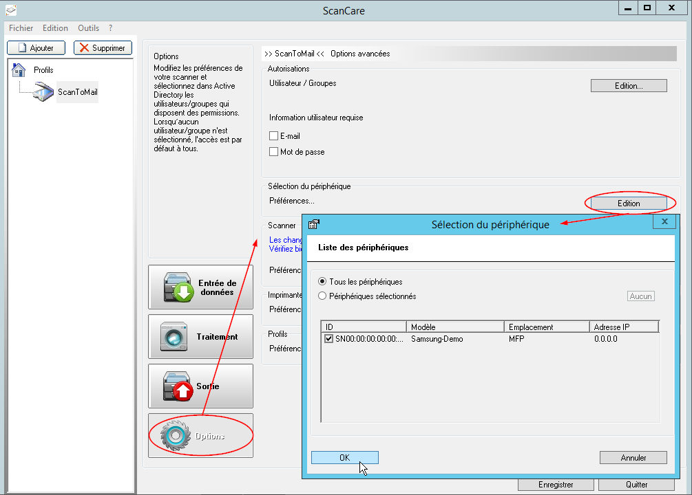

Configurer un profil de test pour validation
Les multiples paramètres disponibles pour concevoir un profil Watchdoc ScanCare® sont présentés en détail dans le Manuel de Configuration.
La procédure qui suit explique la manière de configurer rapidement un profil et de l'affilier à un périphérique afin de valider rapidement le bon fonctionnement de Watchdoc ScanCare®. Elle ne décrit pas toutes les possibilités de paramétrage offertes par la solution.
Le profil configuré pour tester la solution doit permettre de numériser des documents, de les nettoyer et de les redresser avant de les envoyer à une adresse e-mail prédéfinie (la vôtre, par exemple).
Créer un profil
-
dans l'interface d'administration Watchdoc ScanCare®, cliquez sur le bouton Ajouter situé au-dessus de la liste des profils ou en bas de la fenêtre principale :

-
Dans la boîte de dialogue Profils qui s'affiche, sélectionnez le type Périphérique intégré et configurez-le :
-
Nom : saisissez le nom attribué au profil : "ScanToMail", par exemple. Ce nom étant affiché sur l'écran du périphérique, le nombre de caractères est limité ;
-
Description : au besoin, complétez le nom en saisissant une description sommaire : "Numérisation pour envoi par mail", par exemple. Cette description étant affichée sur l'écran du périphérique, le nombre de caractères est limité ;
-
Type de profil : dans la liste, choisissez le type de profil :
scanner : permet de numériser le document soumis, après lui avoir appliqué des traitements ;
-
-
Cliquez sur le bouton OK pour créer le profil.

→ Le profil créé s'affiche à gauche, dans la colonne des profils.
Configurer le profil
Cliquez sur le profil affiché dans la colonne de gauche pour accéder à l'interface de paramétrage. La fenêtre ouverte par défaut est celle du paramétrage des champs d'index.
Configurer un champ d'index
-
Dans la fenêtre de droite Champ d'index, cliquez sur le bouton Ajouter ;
-
dans la fenêtre Ajouter un nouveau champ, saisissez le libellé "Titre" dans le champ Affichage;
-
conservez le type Texte ;
-
dans la section Utilisation, sélectionnez Par défaut ;
-
cochez la case Saisie obligatoire ;
-
cliquez sur le bouton OK pour enregistrer le nouveau champ.

Configurer le traitement
Paramétrez le ou les traitements qui seront appliqués au profil :
-
cliquez sur le bouton Traitement ;
-
cochez la case Traitement de l'image et cliquez sur le bouton Préférences ;

-
Dans la boîte Préférences>Traitement de l'image, cochez les cases Nettoyer et Redresser ;
cliquez sur le bouton OK pour enregistrer les traitements appliqués aux documents numérisés.

-
cliquez sur le bouton Enregistrer pour valider le traitement.
Configurer la sortie
Paramétrez le format dans lequel seront convertis les documents numérisés, à savoir un e-mail envoyé à une adresse prédéfinie :
-
cliquez sur le bouton Sortie ;
-
dans le menu des types de sorties proposés, cliquez sur la section Email, puis sur le bouton Email ;
-
cochez la case Activé ;
-
dans la section Serveur E-mail, cliquez sur le bouton Edition pour accéder à l'interface de paramétrage ;

Dans l'interface de paramétrage Serveur Email>Type de serveur, gardez la case Serveur SMTP cochée par défaut ;
-
configurez la section Paramétrages Email :
-
saisissez le Nom de l'expéditeur (ou du service expéditeur) du mail ;
-
saisissez l'adresse Email de l'expéditeur (ou du service expéditeur) du mail ;
-
saisissez l'adresse du serveur SMTP ;
-
saisissez le numéro de port (s'il est différent du port par défaut) et cochez la case si le port est sécurisé par le protocole SSL ;
-
-
cochez la case Préférer les utilisateurs identifiés et référencés pour utiliser les informations de connexion des utilisateurs pour les authentifier su le serveur SMTP ;
-
ochez la case Authentification SMTP et complétez les champs suivants pour désigner l'utilisateur habilité à accéder au serveur SMTP :
-
saisissez le nom de l'utilisateur habilité à se connecter au serveur SMTP ;
-
saisissez le mot de passe de l'utilisateur habilité à se connecter au serveur SMTP.
-
Cliquez sur le bouton OK pour enregistrer le paramétrage du serveur Email.

-
Dans l'interface Prérérences > Diffusion Email, cliquez sur le bouton Edition ;
-
Dans la liste des destinataires Email, cliquez sur le bouton Ajouter ;
-
dans la boîte Email du destinataire, complétez les champs suivants :
-
Nom : saisissez le nom du destinataire (ou d'un groupe de destinataires) du mail ;
-
Adresse Email : saisissez l'adresse mail du destinataire prédéfini (ou du groupe de destinataires) du mail
-
Optez pour A, CC ou Bcc en fonction du rôle joué par le destinataire ;

-
Dans l'interface Prérérences > Document numérisé, cochez la case Ajouter un fichier attaché ;
-
Cliquez sur le bouton pour Enregistrer votre sortie Email.

Affilier le profil à un périphérique
Une fois le profil créé, vous devez le mettre à disposition des utilisateurs sur l'un des périphériques (ou plusieurs) de votre parc.
Pour affilier le profil à un périphérique :
-
cliquez sur le bouton Options ;
-
dans la section Sélection du périphérique, cliquez sur le bouton Edition ;
-
dans la Liste des périphériques, sélectionnez celui ou ceux auxquels vous souhaitez affilier le profil ;
-
cliquez sur le bouton OK pour enregistrer l'affiliation du profil au périphérique.

Tester le service Watchdoc ScanCare.
Une fois le profil affilié à un périphérique, vous pouvez tester le service Watchdoc ScanCare® depuis le périphérique.
authentifiez-vous sur le périphérique ;
-
sur l'écran de ce périphérique, sélectionnez le service
 ScanCare ; l'interface présentée à l'utilisateur varie en fonction de la marque du périphérique ;
ScanCare ; l'interface présentée à l'utilisateur varie en fonction de la marque du périphérique ; -
dans le formulaire affiché sur l'écran du périphérique, saisissez le titre du document que vous souhaitez numériser et envoyer par mail ;
-
lancez la numérisation de votre document ;
-
réceptionnez le document dans la messagerie e-mail prédéfinie ;
→ si le profil est correctement paramétré, vous recevez par mail le document numérisé.